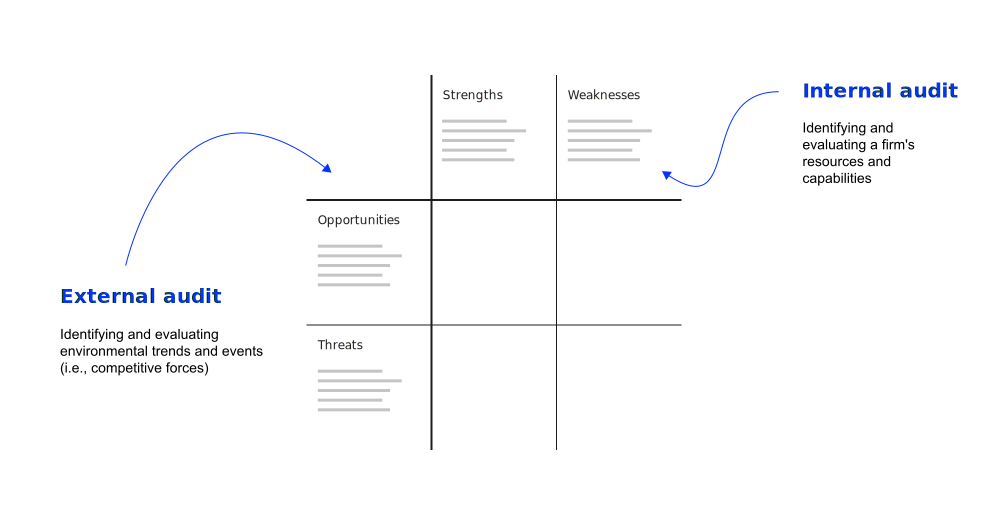
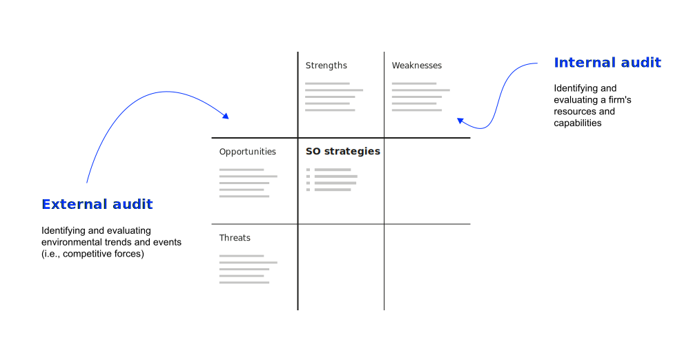
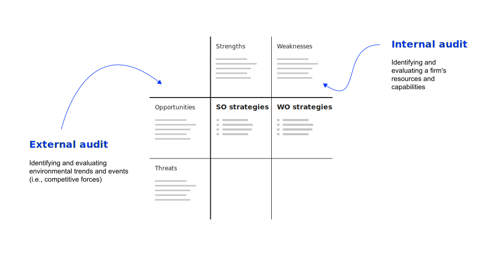
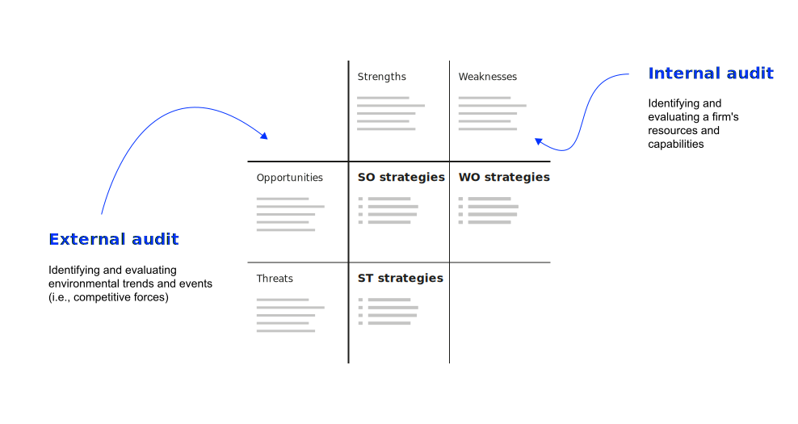

Resource-based Advantages
Strategy and Performance Management
Neu-Ulm University of Applied Sciences
July 22, 2025
Learning objectives
After this section, you should have a solid understanding of
- the nature and purpose of an internal audit in formulating strategies;
- major internal factors that impact competitive advantage;
- the tenets of the resource-based view and dynamic capabilities;
- the construction and application of the Strengths-Weaknesses-Opportunities-Threats (SWOT) matrix;
- how internal resources create sustainable competitive advantage.
Reflection
Before we start: Any questions or comments regarding the strategy formation concepts discussed last week?
Internal perspective
Internal audit
Assessing a firm’s strengths and weaknesses so that strategies can be formulated that capitalize on internal strengths and overcome weaknesses.
Key resources
Key internal areas/resources an internal assessment should focus on:
Tangible resources, intangible resources, organizational capabilities, competitive assets, knowledge management, strategic flexibility, technology as well as culture & values.
Excursus: culture
Culture eats strategy for breakfast. Peter Drucker, Management consultant, educator and author
The most brilliant strategies can fail if they are not congruent with the prevailing culture within an organization. Successful organizations, thus, integrate culture and strategy.
Discussion
As the person responsible for shaping the strategic management process, you must take into account the role of organizational culture.
What specific, actionable measures can you implement to align culture with strategy — and ensure that culture supports strategic decision-making and execution?
Reading — key takeaways
Form small groups of 3–4 students and discuss what you have learned about the Resource-Based View (RBV) from reading Peteraf (1993).
Your task:
- Summarize the RBV’s key tenets — include the main concepts, definitions, and underlying logic.
- Derive the key implications for strategic management — what does RBV mean for how firms should compete and organize?.
- Prepare to present your findings in a short presentation.
Resource-based view
Key assumptions
The RBV contends that internal resources are critical for achieving and sustaining competitive advantage, even more important than the environment.
VRIO framework
To create sustained competitive advantage, resources must be valuable, rare, inimitable/non-substitutable, and organizationally supported (Barney, 1995).
Limits to competition
Peteraf (1993) identifies ex-ante and ex-post limits to competition that are crucial for sustaining competitive advantage.
Dynamic capabilities
Overview
Dynamic capabilities refer to a firm’s ability to integrate, build, and reconfigure internal and external resources to address rapidly changing environments (Teece et al., 1997).
Core elements
Sensing,
(identifying and assessing opportunities)
seizing,
(mobilizing your resources to capture value from those opportunities)
and transforming
(continuous renewal)
Example: Apple Inc.
Apple provides a compelling illustration of dynamic capabilities in action through sensing, seizing, and transforming.
Apple’s success can be attributed in part to its dynamic capabilities, allowing the company to sense changes in the market, seize opportunities like the smartphone revolution, and reconfigure its resources and capabilities to maintain a competitive edge.
Dynamic capabilities and IS

SWOT framework
Overview
The Strengths-Weaknesses-Opportunities-Threats (SWOT) framework integrates internal and external analysis to develop four types of strategies.
SWOT matrix structure





Process for SWOT development
Steps in using the SWOT framework:
- Perform an external audit to identify opportunities and threats
- Perform an internal audit to identify strengths and weaknesses
- Allocate internal and external factors in the matrix
- Review whether allocation to (one) box is correct
- Structure the points in each box (i.e. group under headline, structure in sub-levels)
- Review potential relevance (and disregard as appropriate)
- Test whether statement is true and quantify where possible
- Review, prioritize
- Develop strategies based on the analysis
Key takeaways
- Internal audit focuses on identifying strengths and weaknesses across functional business areas
- Resource-based view emphasizes that internal resources are more critical than environment for competitive advantage
- VRIO framework provides systematic approach to evaluating resources for sustainable competitive advantage
- Dynamic capabilities enable firms to sense, seize, and transform in rapidly changing environments
- Culture integration is crucial - culture can enable or constrain strategy execution
- SWOT analysis provides comprehensive framework integrating internal and external factors
- IT plays multiple roles in dynamic capabilities as enabler, embedded component, outcome, and context
- Limits to competition both ex-ante and ex-post are necessary for sustaining competitive advantages
Review and consolidation
The following questions are designed to review and consolidate what you have learned and are a good starting point for preparing for the exam.
- Do you agree or disagree with the resource-based view (RBV) theorists that internal resources are more important for a firm than external factors in achieving and sustaining competitive advantage? Explain your and their position.
- What makes a resource valuable to a company? Give specific examples.
- Explain the concept of resource heterogeneity. Why is it considered a crucial factor in determining competitive advantage according to the RBV?
- How does resource immobility relate to the sustainability of competitive advantage?
- How do dynamic capabilities enable firms to adapt and innovate over time?
- What is the relationship between a firm’s resources, competitive advantage, and value creation for customers?
- How does the RBV contribute to our understanding of why some firms consistently outperform others in the marketplace?
- Give examples for the different ways IT/IS relates to dynamic capabilities.
- Listen to the decoder episode featuring Josh Miller, the cofounder and CEO of The Browser Company, and subsequently create a SWOT matrix based on the insights provided in the interview.
- Why do you think the SWOT Matrix is the most widely used of all strategy matrices?
- What other strategy matrices do you know? Name and explain one and compare it to the SWOT matrix.
- Think of limitations of the SWOT matrix and related analysis. Name three limitations and relate them to the concept of dynamic capabilities.
- Perform a SWOT analysis for Spotify [Netflix, OpenAI, NVidia …].
Homework
Listen to the Decoder Episode with Philips CEO Roy Jakobs and take notes on Philips’ organisational structure.
Read Lorenz & Buchwald (2023) and make notes on following questions:
- What is the difference between a Chief Digital Officer and a Chief Information Officer?
- What are their main responsibilities?
- How do CDOs and CIOs work together to develop digital projects and align them with the company’s overall strategy?
- What is structural ambidexterity and how does it relate to the CIO and CDO roles?